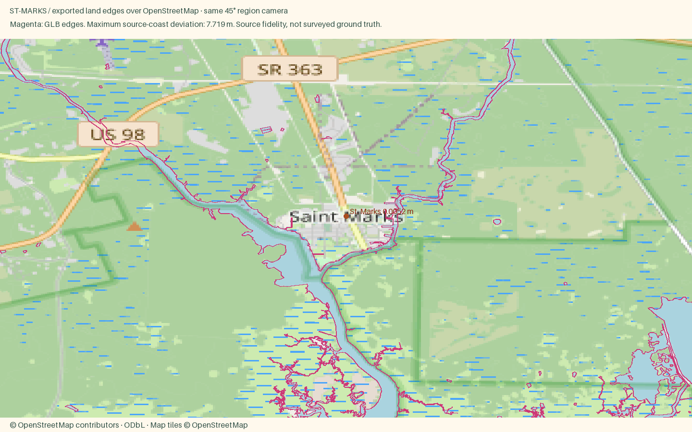

St. Marks
Open atlas · Accuracy CSV · Sourced medians
Region
St. Marks
Open districtA tiny river town where the road ends at the water, half an hour south of Tallahassee, with a Spanish fort site, a rail trail and a huge wildlife refuge next door.
Source alignment

Manual fixes
- Town-specific package using the shared locked pipeline; facade colors are editorial interpretations, not a surveyed color inventory.
- Latest published sale median is the three months ending May 2026, based on one sale; shown explicitly rather than described as a current robust estimate.
- Existing Census land context continues beyond the OSM data rectangle, avoiding artificial water edges at the package boundary.